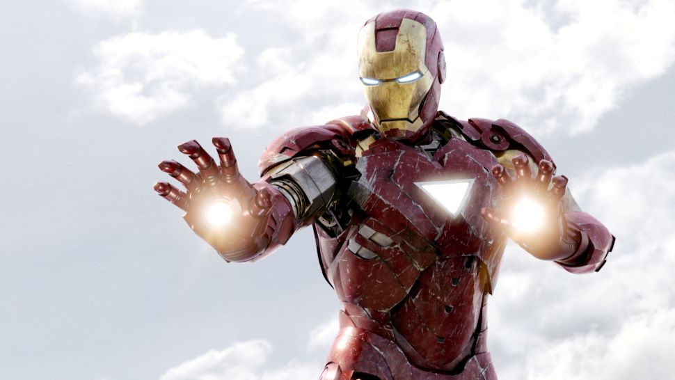

Ironman

Iron Man's creatie was een samenwerking tussen verschillende schrijvers en tekenaars. Stan Lee bedacht de verhalen, Larry Lieber werkte ze uit, Don Heck deed vooral in de eerste Iron Man strips veel van het tekenwerk en gaf de bekendste personages, waaronder Tony Stark zelf, hun uiterlijk, en Jack Kirby ontwierp steeds de cover van een strip. Bovendien bedacht hij Iron Mans oorspronkelijke harnas.
Iron Man's creatie was een samenwerking tussen verschillende schrijvers en tekenaars. Stan Lee bedacht de verhalen, Larry Lieber werkte ze uit, Don Heck deed vooral in de eerste Iron Man strips veel van het tekenwerk en gaf de bekendste personages, waaronder Tony Stark zelf, hun uiterlijk, en Jack Kirby ontwierp steeds de cover van een strip. Bovendien bedacht hij Iron Mans oorspronkelijke harnas. Iron Man deed zijn intrede in strips van meestal 13, maar soms ook 18 pagina’s lang. Net als de andere strips in Tales of Suspense draaiden zijn strips vaak om sciencefiction en bovennatuurlijke thema’s. In nummer 40 werd Iron Man´s oorspronkelijke grijze harnas vervangen door een gouden pantser, en in nummer 48 droeg hij voor het eerst zijn beroemde rood-gouden pak. Vanaf nummer 59 (November 1964) begon Iron Man zijn plaats in Tales of Suspense te delen met Captain America. In maart 1968 werd na 99 nummers de strip "Tales of Suspense" geheel omgedoopt tot Captain America. Iron Man kwam hier nog eenmaal in voor. In mei 1968 kreeg Iron Man zijn eigen stripserie beginnend met Iron Man nummer 1.
Iron Man was oorspronkelijk bedoeld als een anticommunistische held. In de verschillende stripseries waar Iron Man centraal in stond waren technologische vooruitgang en nationale veiligheid steeds terugkerende thema’s. Geleidelijk veranderde dit waardoor Stark in een meer complex personage veranderde.
Anthony Edward “Tony” Stark is de zoon van de industriemagnaat Howard Stark en Maria Carbonell. Al op jonge leeftijd bleek hij een aanleg te hebben voor mechanica. Op zijn vijftiende werd hij al toegelaten in een universitair elektrotechniek programma op het “Massachusetts Institute of Technology”. Toen hij 21 was erfde hij, na de dood van zijn ouders in een auto-ongeluk, zijn vaders bedrijf Stark Industries, en veranderde het binnen een paar jaar in een miljoenenbedrijf dat vooral wapens en munitie leverde aan de Amerikaanse overheid.
Bron Link: http://wikipedia.nl